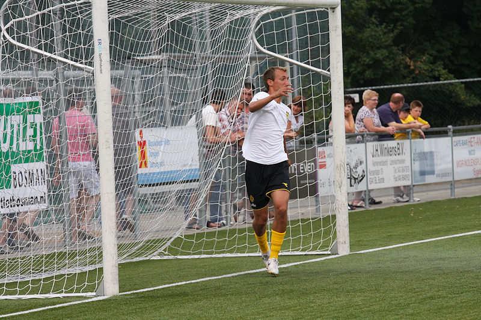

|
VV Chevremont -
Roda JC (0-11) 3 juli 2010 |
De eerste oefenwedstrijd van Roda JC is tegen derdeklasser VV Chevremont.

Omdat Tyton afwezig is verdedigt Janssen het doel tijdens de warming-up.
Het was niet druk bij de knusse club uit Sjeveemet.
De jubilerende thuisclub (bestond 100 jaar) was kansloos tegen Roda dat begon
met o.a. de volgende spelers: Prus, Kah, Addo, Horsten,
Hempte, Svard, Djoum, Meulens, Hadouir.
Addo's gedachten lijken nog bij Ghana's verprutste WK kwartfinale tegen Uruguay.
Nieuwe aanwinst Horsten (links).
Zoals gezegd geen Tyton maar wèl de nieuwe reservekeeper Prus.
Ook nieuw: Hempte.
Prus maakt een praatje met Matondo die vanmiddag niet aantrad.
Na een 0-5 ruststand werd het gehele team gewisseld. Hier treden de broertjes
Stankov aan.
Het is krap langs de lijn bij VVC.
Nog een nieuweling: derde keeper Van Eijck.
Het meeste werk is echter voor de doelman van Chevremont.
Alleen aan de kantine-zijde was de publieke belangstelling redelijk.
Schot Hupperts.
Doelpunt in de 60e minuut van Aleksander Stankov (rugnummer 19).
Meulens, Skoubo en Aleksander Stankov scoorden ieder tweemaal.